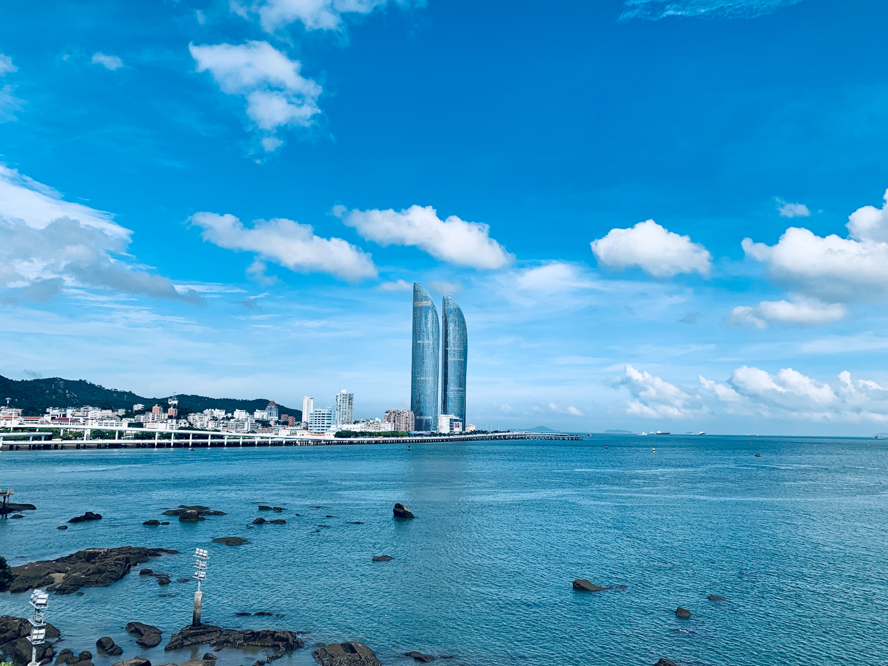

Xiamen alternately known as Amoy is a sub-provincial city in southeastern Fujian, People's Republic of China, beside the Taiwan Strait.
It is divided into six districts: Huli, Siming, Jimei, Tong'an, Haicang, and Xiang'an, and I live in Jimei. The city is well known for its mild climate, Hokkien culture and Gulangyu Island, as well as its relatively low pollution. In 2006, Xiamen was ranked as China's second-"most suitable city for living", as well as China's "most romantic leisure city" in 2011.